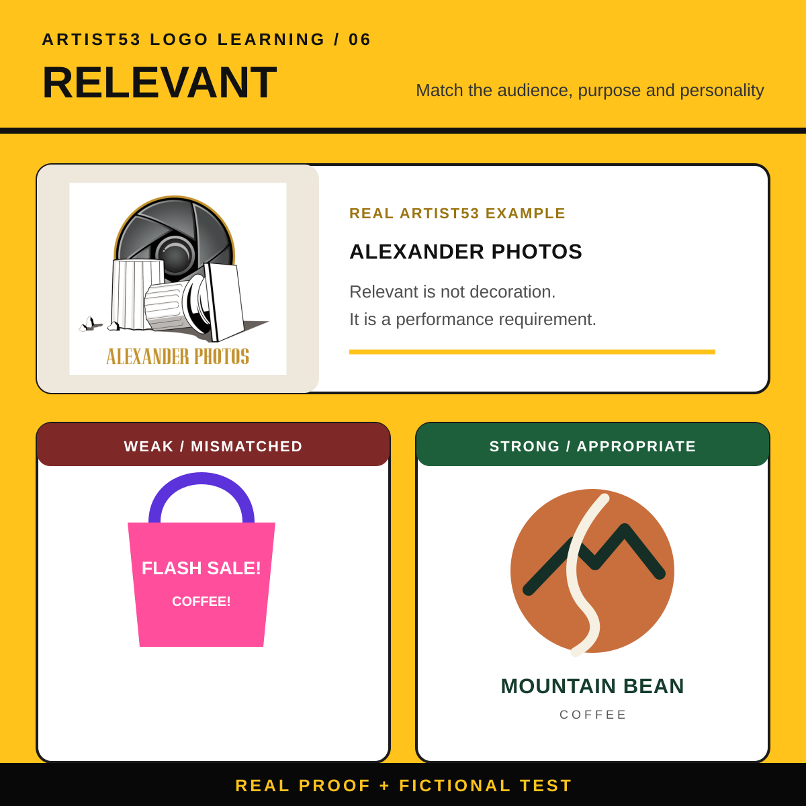

Learning
Good design becomes easier to value when people understand what makes it work. The ARTIST53 Logo Learning System breaks logo development into seven clear stages—from the foundation of a strong mark to a complete identity system.
Know The Brand
Choose The Logo Type
Develop The Concept
Build The Visual Language
Test And Refine
Build The Identity System
ARTIST53 Logo Learning / Stage 01
What Makes A Great Logo?
A great logo does more than look good. It gives people a clear, recognizable symbol for the business behind it. The strongest logos are simple, memorable, readable, versatile, relevant and unique.
↔Swipe on mobile or use the arrows on desktop


08 / Logo Scorecard
Does Your Logo Pass The Six Tests?
- Simple: Is the main idea focused?
- Memorable: Is there something distinctive to remember?
- Readable: Is the name clear?
- Versatile: Does it work everywhere?
- Relevant: Does it fit the audience?
- Unique: Can the brand own the idea?
Client Learning / Before + After
I Think I Am Foundation
A quick visual lesson in why logo development matters. Swipe through the original direction, the refined identity and the finished brand system to see how stronger structure, hierarchy, color and consistency changed the result.
↔Swipe on mobile or use the arrows on desktop


Client Learning / Logo Education
Types Of Logos For Your Brand
A breakdown of the three logo types text-based, illustrative and iconic. Each category includes a link to an ARTIST53 project so you can see the approach in a real case study.
↔Swipe on mobile or use the arrows on desktop